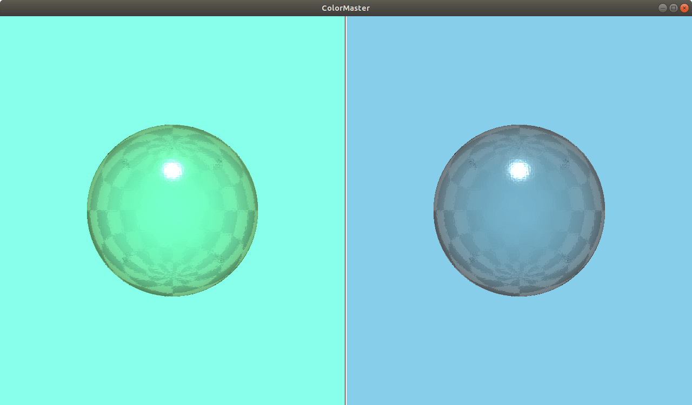

ColorMaster QML Type
A color adjustment effect. More...
| Import Statement: | import QtQuick3D.Effects 1.15 |
Properties
- blueStrength : real
- greenStrength : real
- redStrength : real
- saturation : real
Detailed Description

The ColorMaster effect allows adjusting red, green, and blue separately, as well as overall saturation of the scene.
Property Documentation
blueStrength : real |
The strength of blue color. Range is [0...2]. 1 by default.
greenStrength : real |
The strength of green color. Range is [0...2]. 1.5 by default.
redStrength : real |
The strength of red color. Range is [0...2]. 1 by default.
saturation : real |
The strength of the color. Range is [-1...1]. 0 by default.